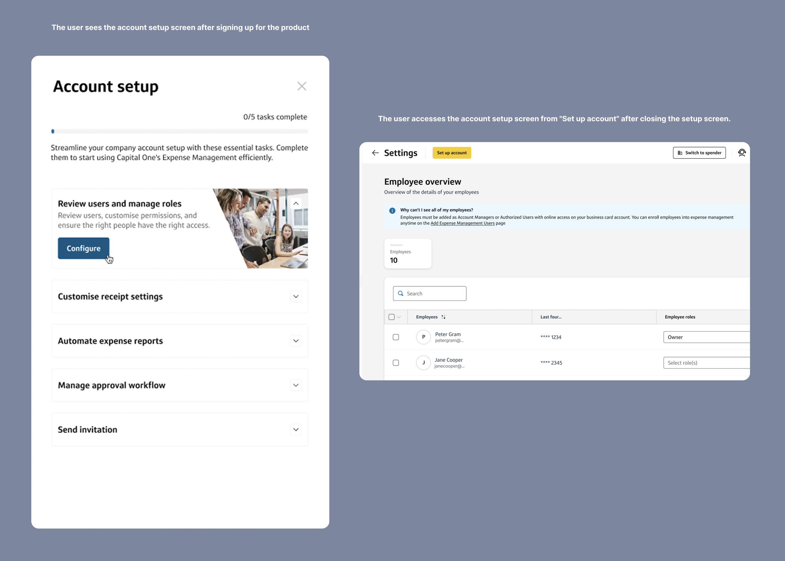
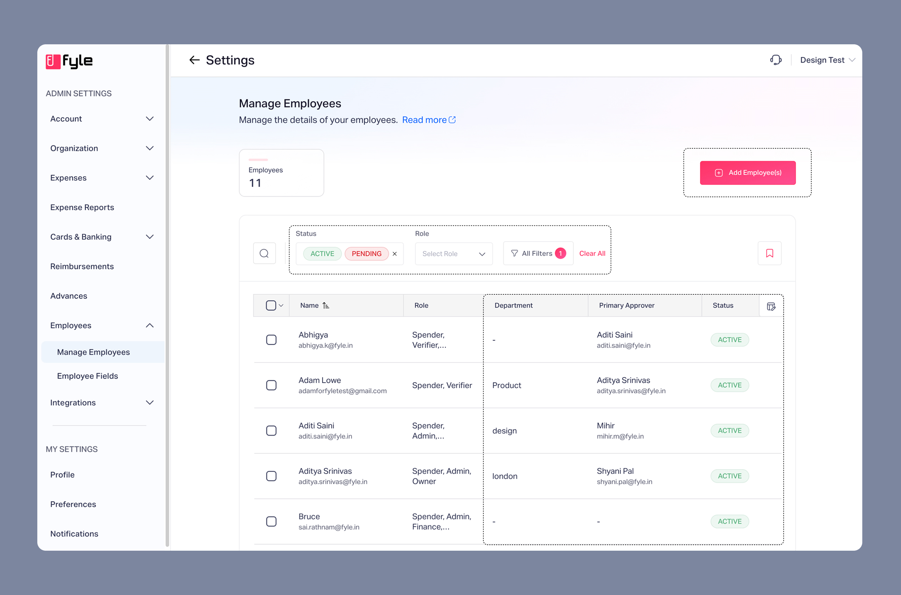
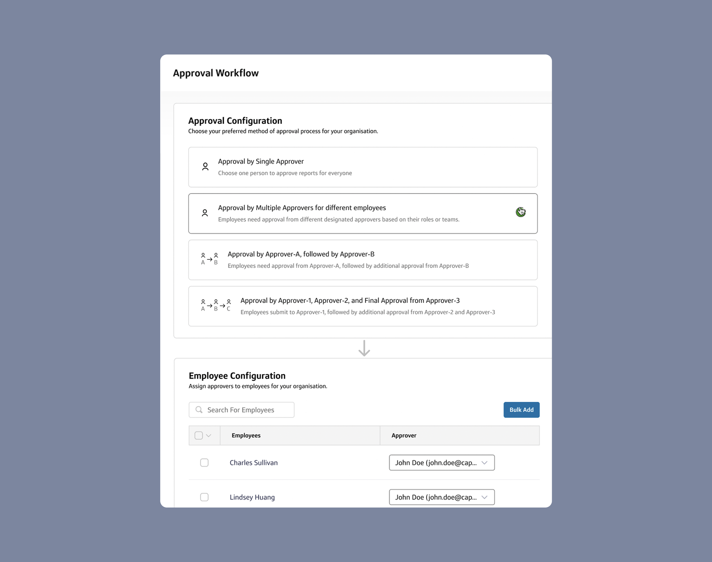
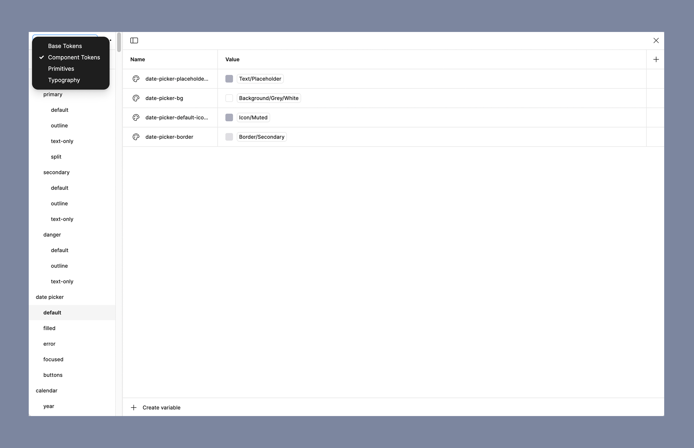
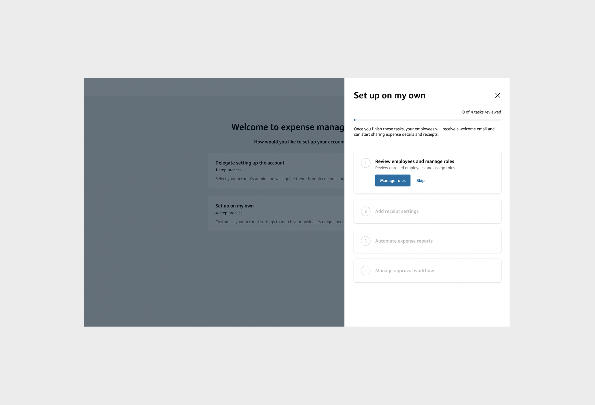
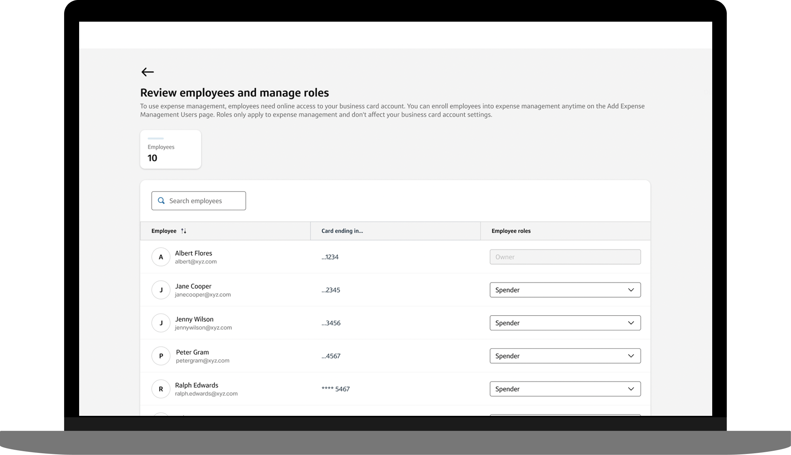
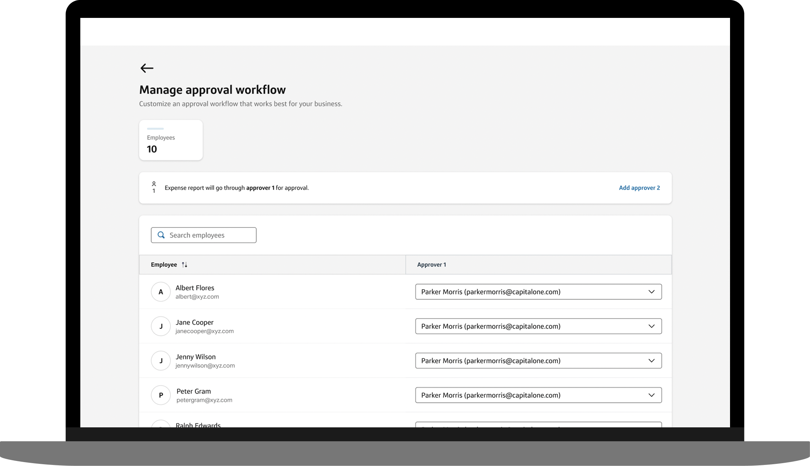
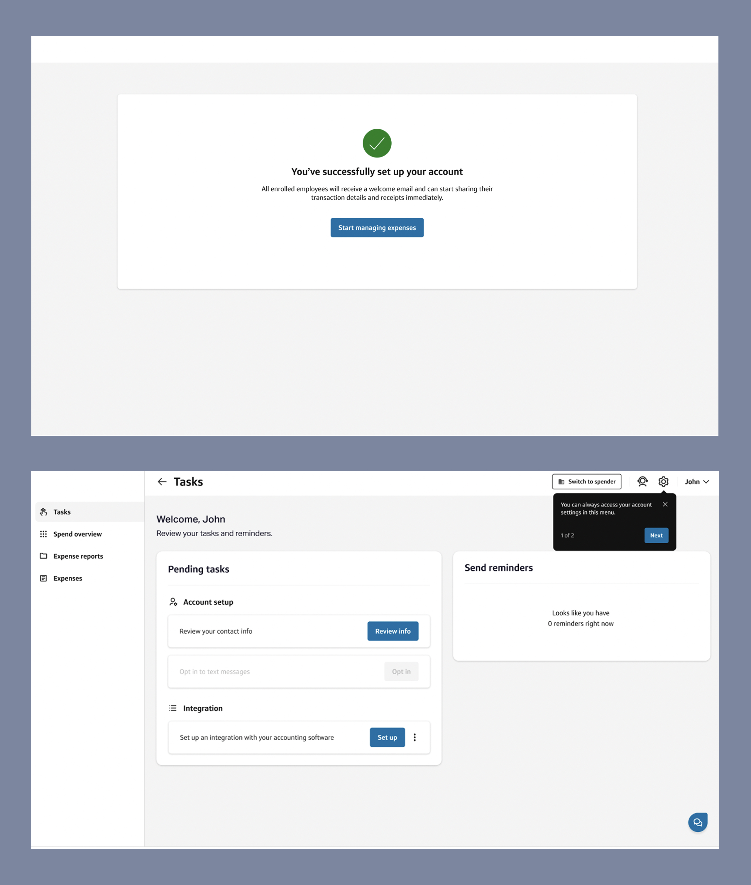

Why Onboarding?
Before we begin, let's understand what Fyle does...
Imagine you’ve just completed a business trip, and now you need to submit receipts for
reimbursement. The finance team must verify each receipt, ensure compliance, initiate reimbursement
and push approved expenses into the company’s accounting books.
Fyle streamlines this entire process—handling everything from receipt collection to approval,
verification, and accounting integration—so businesses can manage expenses
with ease.
To fully leverage Fyle’s capabilities, businesses need to configure their accounts based on their
specific workflows and policies. That’s where the product account setup team comes in.
For years, onboarding at Fyle was a high-touch, guided process. The
account setup team assisted businesses in configuring their accounts—a process that typically took
1.5 months per business, covering:
- Inviting employees to the expense management platform
- Assigning approvers (with varying complexity based on company size)
- Configuring compliance policies
- Setting up accounting integrations
This approach worked well—until Fyle landed a multi-million dollar
deal as part of its new embedded platform offering.
With the embedded platform, any large business could launch its own expense management solution,
fully powered by Fyle, while maintaining its own brand guidelines.
The corporate card program under our banking partner already had 600K to 800K customers and
2,000+ organizations that needed onboarding.
🚨 Our existing approach wouldn’t scale.
With a committed deadline for testing the closed beta, we had to reimagine onboarding from the
ground up—designing, testing, and handing off a self-serve, scalable solution within just 1.5
months.
Framing the Problem
How might we design a self-serve onboarding experience that reduces account setup time, enabling
businesses to realize value faster?
Success Metrics
- Self-Serve Completion Rate in closed beta: ≥ 80%
- Reduce account setup time from 1.5 months to under 15 minutes
- Positive Usability Feedback in external usability testing: ≥ 90%
My role
As the design owner, I led the high-level interactions and user
flows to accelerate delivery while my colleague focused on execution details.
I facilitated cross-functional collaboration through the design phase,
working closely with internal engineering teams, and banking partner's product, design, and
engineering teams.
Solving the problem
During our kickoff call, we aligned on key strategies to make onboarding seamless
and scalable.
Key strategies
- Enabling users to onboard at their own pace – Instead of forcing a rigid setup
process, we allowed users to log in, initiate setup whenever they were ready, and freely explore
the product. This ensured onboarding remained non-blocking.
- Keeping the existing product functionality intact – Rather than overhauling
core features, we optimized the experience within the current system, ensuring minimal
engineering effort.
- Addressing the biggest friction point—approval setup – Through analysis, we
found that the approval setup process required frequent CS team intervention. However, a
complete backend fix wasn’t feasible within our timeline. Instead, we redesigned the interface
experience to simplify onboarding without altering backend logic.
- Leveraging competitive insights – To avoid reinventing the wheel, we analyzed
B2B onboarding flows from industry-leading products and extracted best practices.
- Understanding real-world use cases – We engaged Account Managers to gather
insights on how businesses typically approached onboarding. This helped us refine our approach
and ensure our solution met user needs effectively.
- Building a Design System as per embedded client's branding guidline and using
the same for HFD
Design Decisions & Execution
Exploring Solutions
As per our strategic decisions, we redesigned the onboarding experience, allowing users to complete
the setup at their own pace. The goal was simple—reduce friction and let them explore the product
without feeling blocked.
NB: I will share limited screenshots of onboarding designs without brand logo as part of
the contract. Occasionally, I will share screenshots of the Fyle platform as a reference. The embedded platform is an exact replica of Fyle, except for the client's branding guidelines.
The Plan
- Shortlist necessary steps – Invite employees, assign approvers, set up
policies, and configure integrations.
- Guide users step by step – Allow them to move forward only after completing the
current step.
- Redirect them seamlessly – Take users to the relevant module for setup, and
nudge them toward the next step.
Everything seemed to be falling into place. But as always, reality had other plans. 😅

1️⃣ Step 01: Invite Employees— Hitting with Complexity
- Initial approach: Redirect users to the Employee Page to invite their team
members.
- Problem: This module wasn’t just about inviting employees—it had features like
assigning approvers, employee status management, bulk edits, and exports etc and these actions weren't
absolutly necessary for onboarding. It could easily confuse the first time users.
- Nuanced Take: Could we hide those advanced features and reveal them progressively?
- Issue: When and how do we reveal them without confusing users later?
We parked this problem and moved to the next step.

The unnecessary information & actions during onboarding.
2️⃣ Step 02: Setting Up Policies— More Complexity
Policies in Fyle were inherently complex, often requiring Customer Success intervention.
Hence simplifying the policy set up was absolutly necessary. Instead of thinking through redesigning it,
we digged deeper into data to find the most used condition.
- Data Insight: Receipt settings were the most commonly used. (~85%).
In US, some orgs needed receipt above certain amount, some made it mandatory and a few never needed them.
- But the problem how do we highlight receipt settings alone? What about the
other conditions? When would they appear?
We ran into the same problem as in Step 1.
 Policy page: Receipt settings and other conditions
Policy page: Receipt settings and other conditions
3️⃣ Step 03: Approval Setup
The approval workflow setup was previously buried under the Policies Page, making it almost
undiscoverable.
- Win! After discussions with engineering, we got approval to separate the
approval flow from policies—without changing backend logic.
- However, approval workflows varied across organizations:
- 🔹 Some had a single primary approver.
- 🔹 Others had multi-stage approvals with conditions.
We explored multiple variations, but something always felt off as the IA looked complex.

Early approval workflow
4️⃣ Step 04: Integrations
Unlike other steps, integration setup was entirely self-serve. However, it took an average of 15
minutes to complete—requiring focused effort.
- Key insight: Instead of pushing users to set up integrations upfront, we could
prompt them after they had completed fundamental settings.
- Small yet impactful tweak – Introducing a new default setting where expenses would
be automatically submitted on behalf of the spender. This removed unnecessary friction.
Pivot
By Week 3, it became painfully clear—Solution 01 wasn’t going to work.
- Why?
- Settings are a one-time setup—Users rarely revisit them.
- Progressive disclosure wasn’t the right approach for solving step 01 and step 02—Hiding things initially made future access
unintuitive.
It was clear-we needed to change our strategy.
What if we asked users to finish the basic settings first and then
explore the product?
Final Solution Approach
Engineering Trade-Offs & A Fresh Perspective
This approach meant the engineering team couldn't reuse existing pages. To move forward, we created
rough wireframes for different pages and met with the internal engineering team for further
discussions.
We found a trade-off. We decided to maintain a similar structure to the existing pages while building
entirely new ones. Having a similar structure brings a sense of familiarity and ease of navigation.
Coming back to the designs, here’s how we structured our approach:
Building the Design System
In embedded offerings, the product must adhere to the client's branding guidelines. Because Fyle's design system is token-based, we were able to create a new design system following the client's guidelines in just two days.

The tokens in design system
Onboarding entry point
Once launched, the user lands on a welcome page. They can either delegate the entire flow or set up the account on their own..

Employee Page
After interacting with "Manage Roles," the user landed on a new employee page, designed with a similar structure like actual employee page and required information in mind.
- To further simplify user onboarding, we imported all users from the banking partner as Spenders automatically.
- By changing our approach, the interface became more intuitive, saving us from writing numerous
conditional blocks.

Receipt Page
- Following the same streamlined approach as the Employee Page, we further simplified this
interface using the data insights.
- Unlike Fyle, we provided 3 explicit receipt options for the users.

Approval Page
- New approach: After analyzing the data, we found that businesses primarily use single-stage approval. When a second-stage approval is used, it is mostly based on amount conditions. The third-stage approval system was not an immediate need. Therefore, by default, we assigned the admin as the primary approver and provided a CTA to add a second-stage approver. This simplified the interface.

Successful onboarding and the dashboard
- The integration setup nudges were moved to the dashboard.
- The essential tasks for the admin, which were previously available in another mode, were made explicit on the dashboard.

Extenal Usability Testing
We presented our approach to the banking partner team, and they approved the designs.
Following that, the team proceeded with external usability testing.
Through testing, we found that while users could complete the setup in less than 5 minutes (or even faster),
some struggled with terminology like "receipt settings, expense reporting etc"
They also wondered whether they could set it up later
if they skipped it now, which created a sense of compulsion to proceed with the default settings.
My colleague took the lead in addressing this feedback later.
Closed Beta launch and General Availability
After the usability test, the team implemented the feedback, launched the closed beta, and then proceeded with General Availability (GA).
I tracked key KPIs throughout the process, and the results validated our success—hitting our target metrics gave us the confidence to move forward with GA as planned.
Impact So Far
- NPS:61
- Total orgs onboarded: 700+
- Total expenses processed: $353.33M
It is just the beginning of something great. With this initiative, we laid the foundation for Fyle's embedded product offering.
It opened the door for collaboration with other big clients.
Key Learnings
- Pivot when things don't work.
- Document the flow, even if it already exists in the product—it helps developers move faster. We experienced some back-and-forth even after the handoff was completed.
Thank you for making it so far!